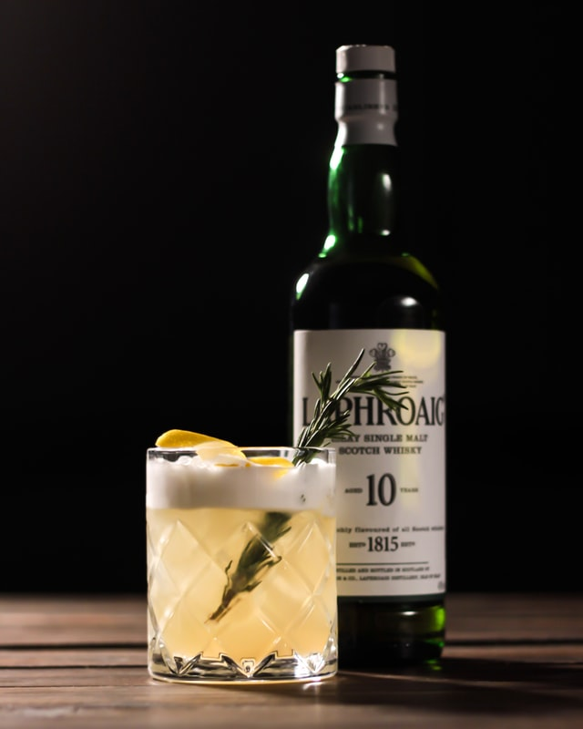

Whisky Sour

Ingredients
- 50ml bourbon
- 35ml lemon juice
- 12½ml 2:1 sugar syrup
- 2 dashes Angostura bitters
- ½ fresh egg white
- ice
50p-sized piece of lemon zest
For the garnish
- slice of orange and a cherry on a stick
Method
-
Shake all of the ingredients (except for the lemon zest)
hard with ice and strain into an ice-filled rocks glass.
Squeeze the lemon zest, shiny side down over the drink
so the scented oils spray across the surface.
Discard the zest, add the garnish and serve.